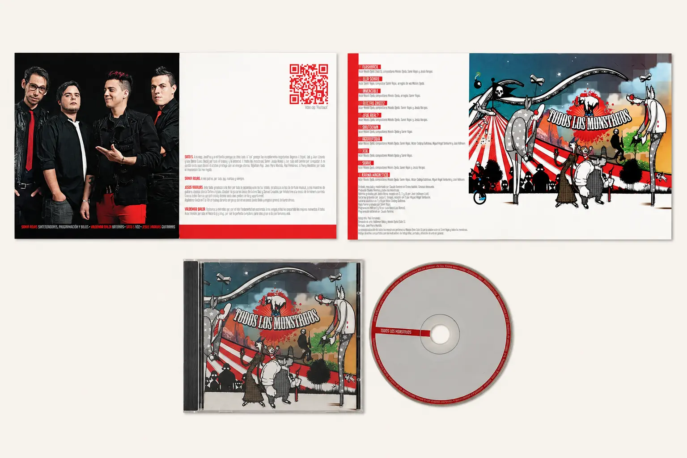
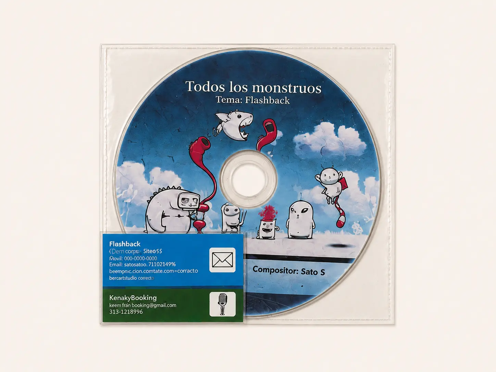

Music Project
Development
Three independent projects. Three stages of artist development. One consistent approach: turning music into identity, narrative, live experience and audience.
Across Caracas, Mexico City, Buenos Aires and Berlin, I have worked from inside the artist journey—writing and developing music while building the visual language, teams, release strategies and communities that allow a project to grow.
Azul Animal
Azul Animal emerged from Caracas' independent music scene between 2004 and 2009. Beyond writing, composing and performing, I helped develop the project across music, visual identity, digital presence and live performance.
At a time when MySpace was becoming an essential platform for independent artists, we built a community of more than 13,000 followers, primarily across Mexico and Venezuela. That cross-border audience helped lead to two songs—Azul Animal and Agorafobia—being included in Alter-Nation: Compilado Alternativo Mexicano, released by Carpe Diem Records México.
I developed a colour-driven identity across our social presence, promotional materials and multimedia EP, while overseeing the technical rider and the artistic and technical details of every live show. The project also received airplay on early alternative-music programmes in Caracas and other Venezuelan cities.
Todos los
Monstruos

I founded Todos los Monstruos in Caracas in 2009 and led its development as both a musical project and a multidisciplinary creative universe. By 2012, the sound we had developed in the studio—blending genres, electronic rhythms and technology—had become genuinely distinctive within the scene and its moment.

In collaboration with Venezuelan visual artist Jean Piero Montilla, I created a distinctive conceptual language connecting the music with artwork, flyers, press materials, storytelling and live performance. The project combined songwriting and electronic experimentation with Ableton Live and unconventional controllers—including PlayStation controllers used for real-time sampling.
Todos los Monstruos
Todos los Monstruos was selected for Festival Nuevas Bandas, an important Latin American platform for emerging music. It achieved national radio rotation, extensive press coverage and appearances at major festivals, including Caracas Rock before more than 13,000 people. The release artwork was submitted for Latin Grammy consideration.
Beyond the music, I assembled and led a team including management, road management and press. I also created the Todos los Monstruos collective, expanding concerts into multidisciplinary events with circus performers, visual artists and guest musicians.
At the height of the project, I signed an agreement with a Colombian record label that prevented me from releasing new music for more than five years. It became a defining lesson in artist rights, contracts and long-term release strategy. During that period, I began developing #HarakiriRobot—an alternative creative path that would fully re-emerge years later in Berlin.
#Harakiri
Robot
#HarakiriRobot began during the contractual period that prevented me from releasing new music with Todos los Monstruos. Initially developed between Buenos Aires and Mexico City, it remained largely unreleased before I resumed and reimagined it in Berlin in 2024.
The project is built around a cyberpunk and post-apocalyptic universe. Through music, visual identity and storytelling, it explores a central paradox of contemporary life: how technological hyperconnectivity can gradually erode genuine human connection.
Currently in pre-production for a new EP, #HarakiriRobot brings together songwriting, electronic experimentation, visual world-building and a community-led release strategy. Its crowdfunding campaign is being developed around limited-edition supporter kits containing exclusive materials from the project's fictional universe—turning funding, storytelling and audience participation into one experience.
The project is also in early conversations with Desperados Records and British producer Dom Goldsmith of HÆLOS.
What these projects taught me
First-hand experience across every stage of artist development: finding a distinctive sound, defining positioning, building visual identity and storytelling, developing live performance, assembling teams, generating media attention and connecting projects with audiences.
I have spent years doing artist development from the inside. Now I bring that experience to the A&R side of the industry.
← Back to Portfolio